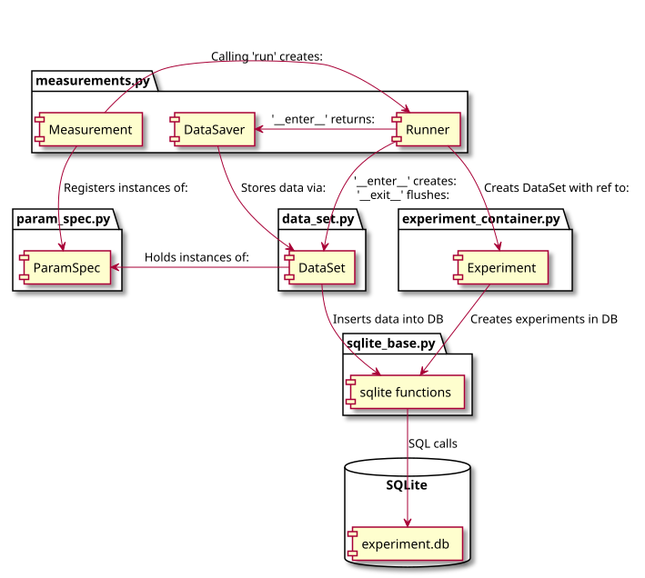

Dataset Design
Introduction
{kind=link}

Fig. 1 Basic workflow
This document aims to explain the design and working of the QCoDeS DataSet. In Fig. 1 we sketch the basic design of the dataset. The dataset implementation is organised in 3 layers shown vertically in Fig. 1 Each of the layers implements functionality for reading and writing to the dataset. The layers are organised hierarchically with the top most one implementing a high level interface and the lowest layer implementing the communication with the database. This is done in order to facilitate two competing requirements. On one hand the dataset should be easy to use enabling simple and easy to use functionality for performing standard measurements with a minimum of typing. On the other hand the dataset should enable users to perform any measurement that they may find useful. It should not force the user into a specific measurement pattern that may be suboptimal for more advanced use cases. Specifically it should possible to formulate any experiment as python code using standard language constructs (for and while loops among others) with a minimal effort.
The legacy QCoDeS dataset qcodes.data and loop qcodes.Loop is
primarily oriented towards ease of use for the standard use case but makes
it challenging to formulate more complicated experiments without significant
work reformatting the experiments in a counterintuitive way.
The QCoDeS dataset currently implements two interfaces directly targeting end users. It is not expected that the user of QCoDeS will need to interface directly with the lowest layer communicating with the database.
The dataset layer defined in the DataSet Specification provides the most
flexible user facing layer. Insert reference to notebook. but requires users
to manually register ParamSpecs. The dataset implements two functions for
inserting one or more rows of data into the dataset and immediately writes it
to disk. It is, however, the users responsibility to ensure good performance
by writing to disk at suitable intervals.
The measurement context manager layer provides additional support for flushing data to disk at selected intervals for better performance without manual intervention. It also provides easy registration of ParamSpecs on the basis of QCoDeS parameters or custom parameters.
But importantly it does not:
Automatically infer the relationship between dependent and independent parameters. The user must supply this metadata for correct plotting.
Automatically register parameters.
Enforce any structure on the measured data. (1D, on a grid ect.) This may make plotting more difficult as any structure will have to
It is envisioned that a future layer is added on top of the existing layers to automatically register parameters and save data at the cost of being able to write the measurement routine as pure python functions.
We note that the dataset currently exclusively supports storing data in an SQLite database. This is not an intrinsic limitation of the dataset and measurement layer. It is possible that at a future state support for writing to a different backend will be added.